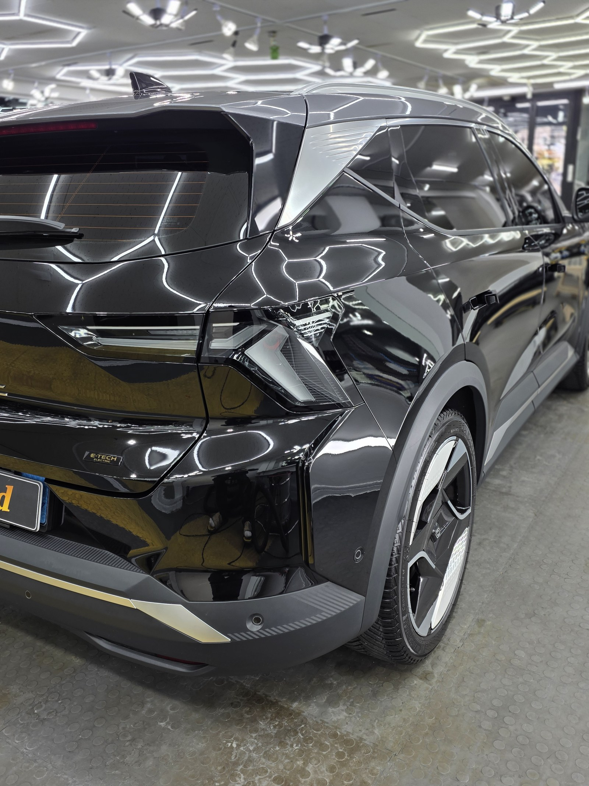
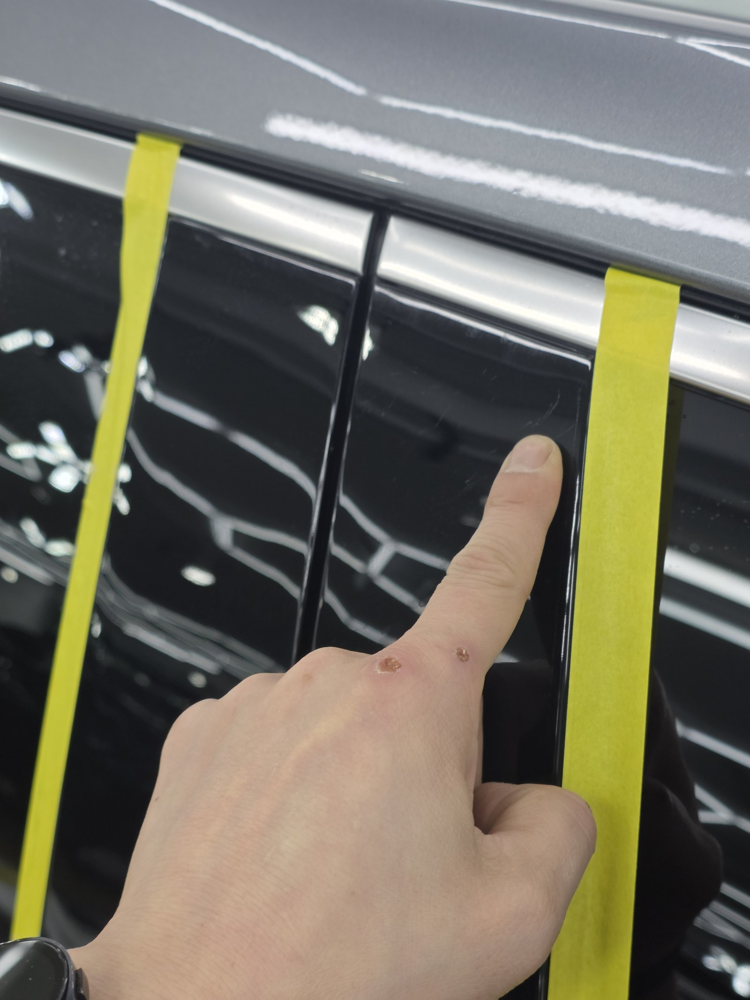
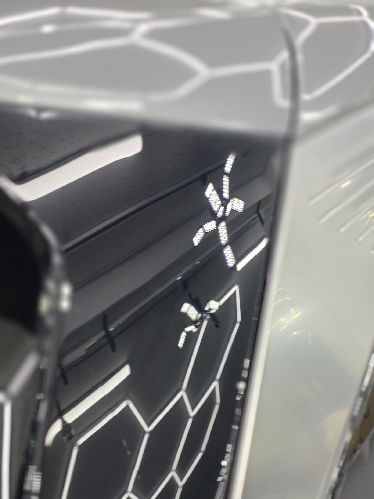
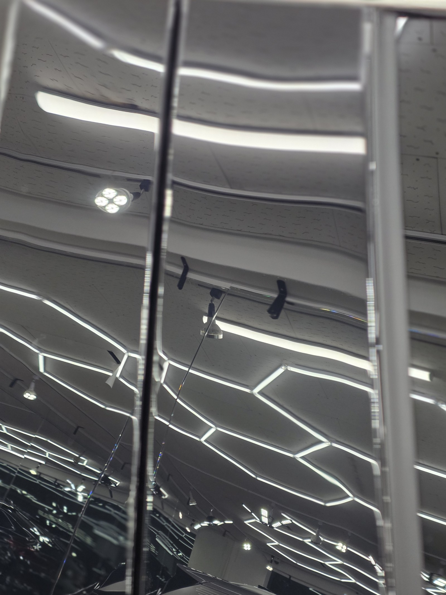
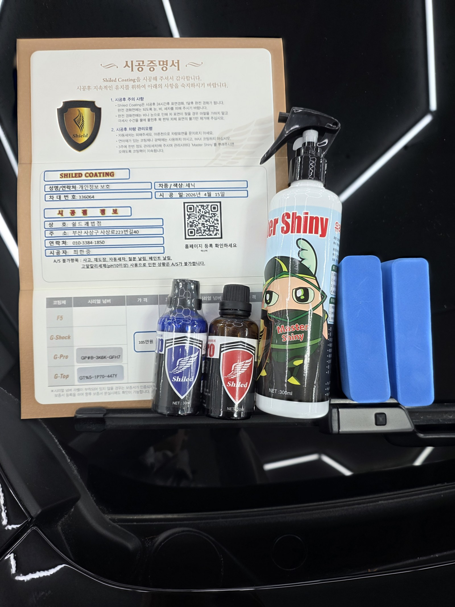

부산 쉴드광택에 들어온 르노 세닉 E-Tech입니다. 검정 바디입니다.
이 차는 광택으로 잔기스를 걷어낸 뒤, G-PRO·G-TOP 듀얼코팅으로 마감했습니다.

검정 차는 왜 광택부터 해야 하나
검정은 빛을 그대로 비추는 색입니다. 그래서 스월(거미줄 잔기스)이 가장 잘 드러납니다.
조명 아래에서 도어 패널을 보니 잔기스가 그물처럼 떠올랐습니다. 세차하면서 쌓인 전형적인 미세 스월입니다. 이 상태에서 코팅만 올리면, 그 잔기스를 그대로 덮어 굳히는 셈입니다.

광택 전. 검정 패널에 손가락을 대고 보면 잔기스가 그대로 드러납니다
광택은 무조건 세게 깎는 게 정답이 아닙니다
잔기스를 없앤다고 클리어코트(도장면 맨 위 보호막)를 마구 깎으면, 정작 도장 수명을 깎는 일이 됩니다.
그래서 잔기스 깊이를 보고 필요한 만큼만 컴파운드와 패드를 맞춰 깎습니다. 16년간 직접 시공하며 잡아온 감각입니다.
머신으로 펜더를 폴리싱하는 과정입니다
기술자의 팁
검정은 발색이 깊은 만큼 잔기스도 가장 잘 보이는 색입니다. 광택으로 표면을 평탄하게 정리해야, 그 위에 올린 코팅막이 빛을 왜곡 없이 반사합니다.
코팅 전, 전처리가 9할입니다
좋은 코팅도 더러운 바탕 위에 올리면 의미가 없습니다.
디테일링 세차로 표면 오염을 걷어내고, 철분 제거제로 박힌 쇳가루를 녹여냅니다. 마스킹으로 고무·플라스틱을 보호하고, 탈지까지 끝내야 비로소 코팅을 올릴 면이 됩니다. 눈에 안 보이는 오염까지 잡는 게 퀄리티의 시작입니다.
왜 싱글이 아니라 듀얼인가
듀얼코팅은 G-PRO와 G-TOP을 겹쳐 올리는 방식입니다.
G-PRO는 저희 제품 중 경도가 가장 높은 하드코팅입니다. 스크래치 내성을 담당합니다. G-TOP은 발수·방오 성능이 강합니다. 빗물과 오염을 밀어내는 쪽입니다.
검정은 발색도 살려야 하고, 잔기스·물자국 관리도 까다로운 색입니다. 그래서 단단함과 발수·방오를 동시에 가져가는 듀얼로 잡았습니다. 코팅제는 대표가 화학공학 전공으로 직접 개발·제조한 제품입니다.

마감 후
패널 위로 헥사 조명이 한 칸 한 칸 또렷하게 맺힙니다.
왜곡 없이 떨어지는 반사가, 광택으로 표면을 평탄하게 잡고 코팅막이 고르게 올라갔다는 증거입니다. 검정 특유의 깊은 발색 위에, 단단한 보호막을 한 겹 입힌 상태입니다.


모든 시공 차량에 시공증명서와 전용 관리제를 함께 드립니다
시공 후, 이렇게 관리하세요
코팅은 시공으로 끝이 아닙니다. 관리로 수명이 갈립니다.
완전 경화 전(약 하루)에는 비·눈·세차를 피해 주십시오. 자동세차(기계세차)는 브러시가 잔기스를 만드니 피하시는 게 좋습니다. 3주에 한 번 관리 세차 때 전용 관리제 '마스터샤이니'를 뿌려주시면 코팅력이 오래 유지됩니다.
자주 묻는 질문
Q. 검정 차는 왜 광택부터 해야 하나요?
A. 검정은 빛을 그대로 비춰 스월이 가장 잘 드러납니다. 잔기스가 깔린 상태에서 코팅만 올리면 그 잔기스를 덮어 굳히게 됩니다. 그래서 광택으로 표면을 먼저 정리한 뒤 코팅을 올립니다.
Q. 듀얼코팅(G-PRO+G-TOP)은 어떤 조합인가요?
A. G-PRO는 경도가 높아 스크래치 내성을, G-TOP은 발수·방오를 담당합니다. 둘을 겹쳐 올려 단단함과 발수·방오를 동시에 가져갑니다. 잔기스와 물자국 관리가 까다로운 검정에 잘 맞습니다.
Q. 광택을 하면 도장이 얇아지지 않나요?
A. 필요한 만큼만 깎습니다. 클리어코트 두께를 보고 잔기스 깊이에 맞춰 컴파운드와 패드를 조절합니다. 무조건 세게 깎는 게 정답은 아닙니다.
Q. 코팅 후 관리는 어떻게 하나요?
A. 완전 경화 전 약 하루는 비·눈·세차를 피해 주십시오. 자동세차는 잔기스를 만드니 피하시고, 3주에 한 번 마스터샤이니로 관리하시면 코팅력이 오래 유지됩니다.
Q. 쉴드광택 위치와 예약은 어떻게 하나요?
A. 부산 남구 유엔로220 1F 쉴드광택입니다. 예약·상담은 010-3384-1850, 대표 최한중이 직접 상담하고 책임 시공합니다.
신차든 출고한 지 된 차든, 시작점이 다르면 결과도 다릅니다.
제품을 직접 만드는 사람이 직접 시공합니다.
부산에서 광택·유리막코팅을 고민 중이시면 편하게 연락 주십시오.
어떤 차를 타냐보다 어떻게 타냐가 중요합니다~!
📞 010-3384-1850 견적 문의쉴드광택 · 부산 남구 유엔로220 1F · 대표 최한중